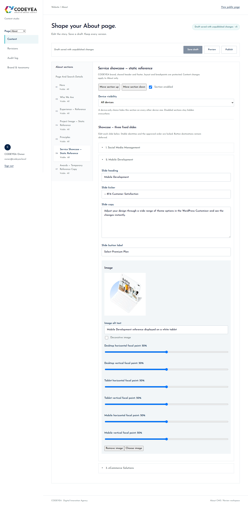

About Showcase — numbered slider
Private draft 5. Three original WordPress slides, measured 1-second vertical transition, keyboard and touch controls. Nothing published.
Report and exact scope · Checks · Draft/revision boundary
Desktop: 01 → 02 → 03 → 01
Three-slide CMS collection
